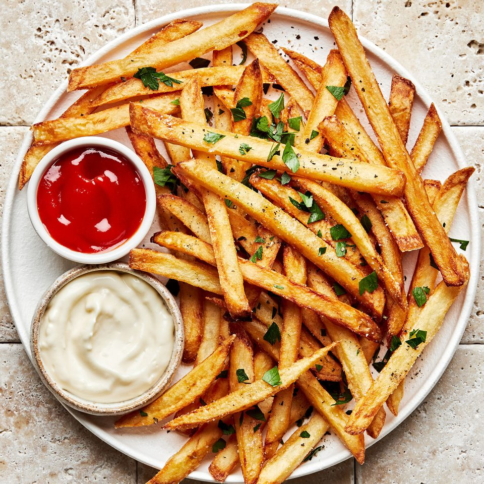

Back to Home
French Fries

Crispy Homemade French Fries
Simple, golden, and crunchy—these homemade french fries are easy to make and perfect for any meal.
Serve hot with ketchup, mayo, or your favorite dipping sauce.
Ingredients:
- Potatoes
- Olive Oil
- Salt
- Pepper
Steps:
- Preheat the oven to 425°F (220°C).
- Wash, peel, and cut the potatoes into even sticks.
- Soak the potato sticks in cold water for 30 minutes, then drain and dry well.
- Toss the potatoes with olive oil, salt, and pepper until evenly coated.
- Spread the fries in a single layer on a baking sheet.
- Bake for 25-30 minutes, flipping halfway through, until golden and crispy.
- Serve hot with ketchup or your favorite dipping sauce.